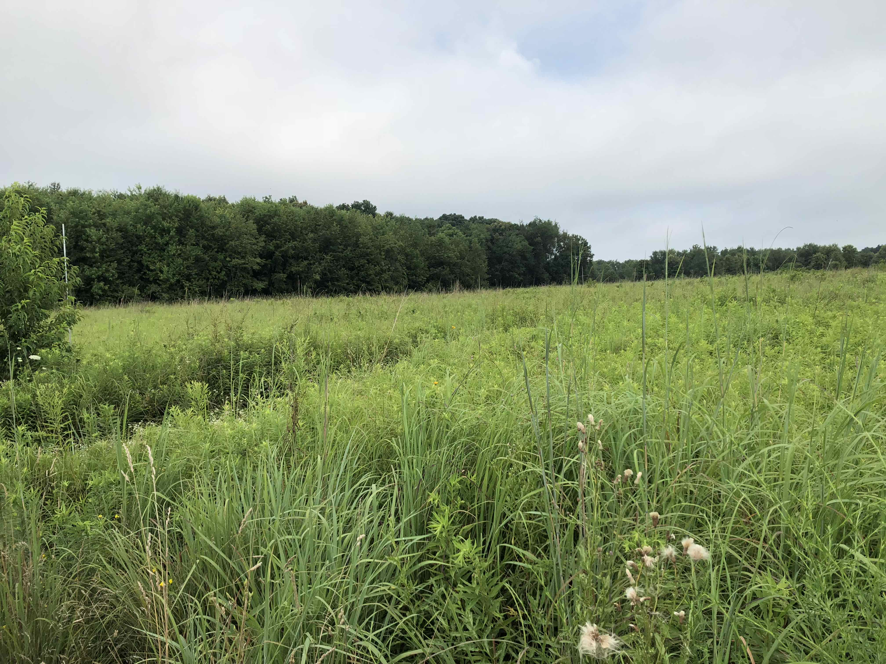

Smith Lab News - 2018 Archive
December 15, 2018:
Nick was in DC last week for the Fall meeting
of the American Geophysical Union (AGU). AGU is a huge (20k+ people) meeting of
of geoscientists, broadly defined. The meeting is packed with talks and poster
presentations from scientists from a variety of career stages. Some of Nick's
highlights from the week:
Monday (12/10) : Nick convened an afternoon session on plant canopies. The session
included a diverse array of talks and posters from sub-cellular to global scales.
Highlights of the oral session included
Jens Kattge introducing version 5 of the
TRY plant traits
database,
Doug Morton discussing Amazonian canopy structure (only 60% of the
canopy receives full sunlight!),
Holly Croft showing us how she is tracking
global chlorophyll content and its relationship to other plant traits,
Gerald Page discussing leaf temperatures (note to modelers:
not the same as air temperatures!),
Anthony Walker speeding up his photosynthesis
model with analytical solutions,
Susanne Weisner telling us about canopy entropy,
Jan Pisek measuring leaf angles, and
Cheng-Wei Huang discussing coordinated
physiology. Despite a few A/V malfunctions, it was a great session!
The day concluded catching up with NGDev colleagues Beni Stocker
and Wang Han over ramen.
Tuesday (12/11) : The onslaught of science continued into day 2.
Around talks, Nick was able to do a bit of student recruiting for AGU-related
labs in the Biology department at TTU. This included labs headed by
Dylan Schwilk ,
Natasja Van Gestel ,
as well as the Smith Ecophys Lab .
Wednesday (12/12) : Wednesday tends to be the most active day of the
week at AGU, as both the folks that come early and leave early tend to
be around. Nick was able to see a number of talks and was also able to
connect with collaborator
Beni Stocker (now at ETH in Zurich).
Nick and Beni worked on incorporating Nick's version of an
optimal photosynthesis model into the larger optimality-driven
P-model for predicting
GPP fluxes. Have a look at the two models and stay tuned for an upcoming
paper describing Nick's model (forthcoming in Ecology Letters ).
Nick also attended a Purdue alumni event at the Cosmos Club in DC.
At the event, members of the
Purdue Climate Change Research Center
had an open discussion about climate impacts globally as well as in Indiana.
It was a great outreach event. It'd be great to do something similar with TTU
alumni through the
Climate Science Center .
Thursday (12/13) : Thursday included more talks and continued recruiting.
During lunch, Nick was able to catch up with members of the EaSM land management
group, including
Quinn Thomas and his lab,
Jeff Dukes ,
Danica Lombardozzi , and
Will Wieder . This was a nice precursor to the session that would be held the
following day. Nick also caught up with former colleagues at the annual
Purdue AGU reception at Matchbox Pizza.
Friday (12/14) : The last day of the meeting was a busy one! In the morning,
Nick caught a number of good posters, including some excellent work on land
management. One poster, by
Linda Shenk
(Iowa State), stood out in particular. Dr. Shenk is an English professor who has
teamed up with atmospheric scientists to develop a tool (or game) for assessing
the climate and ecosystem impact of different management decisions. It'd be great
to do something similar for producers and policy makers in West Texas!
The afternoon included an oral session on land management in the Earth system.
The session was a bit of a "Frankenstein" as it was a merger between three similar
sessions (including one organized by Nick). Nonetheless, there was good cohesion
amongst the talks and the session turned out great!
December 5, 2018:
Nick was interviewed for a story on sustainability in Lubbock and at TTU. We're a bit behind the times, but Nick is optimistic that the city and university will become more sustainable! Check out the story by TTU undergrad Brandi Addison here .
November 4, 2018:
Nick joined members of Matt Johnson's lab for a weekend journey to the Guadalupe Mountains to do some botanizing! We had a look at the flora of the region in hopes to resample some of the areas sampled by TTU botanists 50 years ago when the national park was first established. These samples have been preserved in the TTU herbarium. The temporal comparison will be used to examine genetic and physiological changes that have happened to the area over the past 50 years.
Our campsite on the mountain!
Zach Bailey next to the "blood red" bigtooth maple.

Haley Hale conquering the Guads!
We love Poaceae! (note the heart shape of this Muhlenbergia torreyi)
Field assistant Marlo Smith takes in the view.
Tarantula!
October 25, 2018:
Jorge got a chance to do some sampling in the Davis Mountains in Southwest Texas. He joined Schwilk lab PhD student and grass flammability extraordinaire, Xiulin Gao, as they sampled grass from a variety of locations. Check out some of the cool picture Jorge took from their journey!
October 10, 2018:
It's long overdue, but we finally have some lab policies down on paper. They can be found in a GitHub repository here. We welcome any comments.
October 1, 2018:
Biology undergrads in the wild! Nick, along with Dylan Schwilk, Liam McGuire, and Vince Sisneros (TTU Bio advisor), took a group of undergrads on a nature hike at Caprock Canyon State Park. We had a great time learning (and teaching) about the plants an animals in the area. The trip included a 7 mile hike through the caprock and ended with a bat catching demonstration at an abandoned railroad tunnel. Hopefully we can make this a yearly adventure!
September 26, 2018:
While at the annual ESA meeting, Lizz shared her plant love origin story with the blog Plant Love Story. Hear more about How a 19th Century President in Rural Ohio Helped me Learn to Love Plants and helped to make Lizz the scientist she is today.
September 23, 2018:
Yesterday was harvest day in the lab!
Nick, Lizz, Evan, Helen, Risa, Leah, Angel, Jorge, and newest member, Ana, all spent the day at a native rangeland near Lubbock.
In total, we harvested biomass from 122(!) plots.
We also gathered community composition and light availability data.
The data were gathered for two separate experiments:
(1) Our Lubbock NutNet plots. These data are "year zero" data that will help establish a baseline for further year's results.
(2) Leah's Mesquite project. Leah is looking at how Mesquite trees alter microhabitat parameters such as light, nitrogen, and water availability.
She is examining how these microhabitat differences influence plant growth and diversity.
September 4, 2018:
The semester has officially ramped back up. Last week the lab officially welcomed three new students: Evan Perkowski (PhD), Risa McNellis (MS), and Amanda Pinal (UG). With Lizz (PD), Helen (MS), Leah (UG), Angel (UG), and Jorge (UG) all returning, it will be a busy time in the lab!
August 16, 2018:
Lizz and Nick just returned from a two-week, multi-conference journey to Minneapolis for the annual NutNet workshop and New Orleans for this year's Ecological Society of America meeting.
At the NutNet workshop, we got to meet and mingle with other NutNetters.
Our hosts, notably Elizabeth Borer, Eric Seabloom, and Ashley Asmus, emphasized productivity.
As such, Lizz and Nick got to work developing a project that will examine leaf-to-whole-plant nitrogen allocation across a subset of the NutNet sites.
We also started developing a physiology add-on experiment to examine plant carbon and water relations in response to nutrient additions across the network.
At ESA, Lizz presented some of her postdoctoral work on leaf-to-whole-plant physiological responses to nitrogen addition.
Nick spoke in an organized session on photosynthetic temperature acclimation about modeling acclimation from first principles.
Please contact Nick if you'd like a copy of his presentation.
July 21, 2018:
Nick spent the week in Indiana resampling plots at the Prairie Invasion and Climate Experiment (PRICLE).
PRICLE was nitrogen addition by rainfall variability experiment that ran from 2012-2014.
The experiment was located in a mixed-grass prairie dominated by Canada goldenrod (Solidago canadensis) and little bluestem (Schizachyrium scoparium).
The treatments acted to synergistically reduce plant species diversity and evenness by promoting the dominance of S. canadensis.
Although the experimental treatments ended after the 2014 growing season, the plots were kept in place.
Nick resampled the plots this week to examine whether the short-term effects of the treatments persisted after the manipulations ended.
That is, were the effects transient or did they result in a permanent change to the plant community?
Stay tuned for the answer!

Nick also got to check out a giant rainfall exclusion experiment in a cornfield!
Lots of cool stuff going on at the old stomping grounds!
July 11, 2018:
Nick, along with TTU Biology professors John Zak and Natasja Van Gestel, spent the morning at RN Hopper's farm in Petersburg, TX. They were there with an engaged group of South Central Climate Science Center interns to learn about the impact of alternate management practices on plant and soil health. At the farm, we discussed how "unconventional" management practices such as no-till, dryland, cover cropping, and rotation cropping can reduce costs and increase yields. The students, underrepresented minority undergraduates or recent graduates, came from all over the South Central United States as part of a 3-week internship that includes trips to Texas Tech, the University Oklahoma, Oklahoma State University, and Louisiana State University. As part of their stay at TTU, they will be learning everything from biology to climate modeling to climate communication to social and ethical issues surrounding climate science.
July 3, 2018:
Check out a new paper from the lab, led by colleague Danica Lombardozzi (NCAR), entitled "Triose phosphate limitation in photosynthesis models reduces leaf photosynthesis and global terrestrial carbon storage." The unformatted version of the paper came out in Environmental Research Letters last week. The paper examines the sensitivity of models to TPU limitation, the understudied third limitation of photosynthesis. We find that leaf photosynthesis and global terrestrial biosphere models are sensitive to how TPU limitation is parameterized. For the leaf model, TPU limitation becomes more important at cold temperatures, high CO2 levels, and high light levels. In a global model, the implementation of increased TPU limitation has a negative impact on simulated terrestrial carbon uptake and storage under present-day and future climates. However, while we find TPU is an important process limiting photosynthesis globally, we note that it is highly understudied. We need further experiments dedicated ot understanding TPU under various conditions and the acclimation of this process in particular.
May 23, 2018:
Summer means time for Soybeans and new Students for Lizz's project. Welcome to the lab Angel, Leah, and Zachary!
Some of the full sun soybeans in the greenhouse
Some of the full sun soybeans in the greenhouse
Lizz showing Angel (left) and Leah (center) how to scan leaves
Angel (left), Zachary (Center) and Leah (right) grinding leaves for elemental analysis
May 17, 2018:
As part of his editorial duties at the new journal Forest Ecophysiology, Nick will be editing a research topic entitled Physiological Acclimation to Global Change . The collection of articles will examine acclimation responses of forest species to global changes happening now and expected in the future. If you work in this field, consider submitting!
May 7, 2018:
The cotton growing portion of Lizz's light by nitrogen greenhouse experiment has been completed! Time to switch to soybeans and collect elemental data and leaf trait data in the lab!

The last of the cotton plants before biomass harvest. Which grew under high light and which had low light? Which grew with low N vs high N?

Using the Licor 6800s on some low light acclimated cotton
Undergraduate researcher Austin taking care of washing cotton roots
May 4, 2018:
We took our first Mesquite measurements at out NutNet site! We also gathered leaves for C/N and measured LAI in each plot. Data is officially flowing in!
May 1, 2018:
Here are a few images from the journey that produced out new paper in Ecology. I really wish that I was a better photographer!
Donald E. Davis arboretum

Grandfather mountain (not sampled)
Blandy Experimental Farm
Morgan Monroe State Forest
Kellogg Biological Station
Kellogg Biological Station
Kellogg Biological Station
University of Michigan Biological Station
SE Purdue Ag Center
SE Purdue Ag Center
SE Purdue Ag Center
La Selva Biological Station
La Selva Biological Station
La Selva Biological Station
La Selva Biological Station
Apr 30, 2018:
Nick just had a new paper published in Ecology entitled "Drivers of leaf carbon exchange capacity across biomes at the continental scale."
The paper examines the factors that influence photosynthetic and leaf respiratory traits across a variety of different plants and ecosystems.
The study uses the LCE dataset to drive the analyses.
The dataset includes leaf gas exchange and trait data from 98 species spanning a 53° latitudinal gradient from Costa Rica to Alaska.
The study finds that recent temperature and soil moisture interact to influence photosynthetic capacity.
In dry areas, photosynthetic capacity is reduced with warming, but the downregulation trend is not apparent in wetter areas.
This finding may reconcile meta-analytical studies that have found both a downregulation (Ali et al., 2015) and no response (e.g., Kattge and Knorr, 2007) of photosynthetic capacity to warming.
The results also indicate that photosynthesis is more responsive to short-term (weekly) changes in temperature and soil moisture than it is to long-term climate.
On the other hand, leaf respiratory capacity is less variable than photosynthesis and more responsive to long-term climate.
In the Smith lab and with a global group of collaborators, we are now working on developing theoretical models to predict these responses from first principles.
Stay tuned for more to come!
You can access the article from Ecology's website here.
Figures from the paper:
Apr 27, 2018:
Our NutNet plots are now marked with permanent posts. Once things green up we will begin taking some preliminary measurements. Treatments are scheduled to go in next year. The orange flags in the picture are marking buried resin bags. We are excited to have Juan Garcia-Cancel, a visiting PhD student from the TTU Natural Resources Management department, tracking nutrient flow at our site. Also, the Mesquite is starting to flower!
Also, the Mesquite is starting to flower!

Apr 6, 2018:
The mesquite trees are beginning to leaf out at our NutNet plots. Check out the thorns on those guys! The pink flags in the background are initial markers for the NutNet plots. We hope to have something more permanent in soon!
Mar 19, 2018:
Lizz's light by Nitrogen addition experiment is up and running! She is examining the relative influence of light and N on leaf- and whole plant-level processes. This (relatively) simple experiment will help us better understand how N influences productivity. We hope to use her results to improve the processes represented in Earth System Models.

Mar 18, 2018:
The Smith Lab was just approved to set up a Nutrient Network (or "NutNet" ) site in Lubbock! Along with the core measurements, we will specifically focus on physiological responses to nutrient addition in West Texas Rangeland species. Get in touch if you'd like to collaborate!

Mar 16, 2018:
Check out our new Eos meeting report on modeling global change ecology. The report, led by Susan Cheng with help from Nick and Alison Marklein, examines major topics of discussion from our ESA ignite session last August.
Spring 2018:
We have students in the lab! Mahum Haque, undergraduate (Biological Sciences), will be examining chlorophyll allocation under different light and N environments. Austin Cooper, undergraduate (Biological Sciences), will be examining biomass and nutrient partitioning under different light and N environments. Jorge Orchoa, undergraduate (Natural Resource Management), will be helping to set up our new NutNet experiment. Josh Gutierrez, undergraduate (Biochemistry), will be helping Lizz mix and apply different fertilization treatments in her greenhouse experiment.
Jan 17, 2018: